600900 长江电力 多智能体研究报告
执行摘要
长江电力最新收盘价27.75元，RSI 64.0，股价偏热；同时PE(TTM)18.82低于行业中位数21.6，但PB(TTM)3.10高于行业上四分位2.63，估值压力明显。近期两融余额约119.7亿元，融资买入活跃，短期流动性尚可。整体看，技术面偏强与估值偏高形成博弈，短期波动或加剧。
核心指标速览
| 指标 | 数值 |
|---|---|
| 中信一级行业 | 20 |
| 最新收盘价 | 27.75 |
| MA20 | 27.032 |
| MA60 | 26.9767 |
| 20 日收益率 | 3.66% |
| 60 日收益率 | 2.89% |
| RSI14 | 64.0152 |
| 20 日均量 | 1.22 亿 |
| PE(TTM) | 18.8175 |
| PB(TTM) | 3.0974 |
| PS(TTM) | 7.7743 |
| 股息率(TTM) | 3.40% |
| 总市值 | 6789.93 亿 |
| 融资余额 | 119.37 亿 |
| 融资买入额 | 3.09 亿 |
量价与技术面
核心结论
长江电力（600900）股价于2026年5月29日收报27.75元，MA20（27.03元）与MA60（26.98元）形成金叉，RSI 64.02处于偏强区域；近5日成交量从8,415万股激增至2.13亿股（+153.6%），量增领先于价格弹性，短期量价配合健康，但两融余额自峰值161.94亿元回落26.3%至119.37亿元，杠杆资金与股价走势分化。
图 · RSI 与 MACD
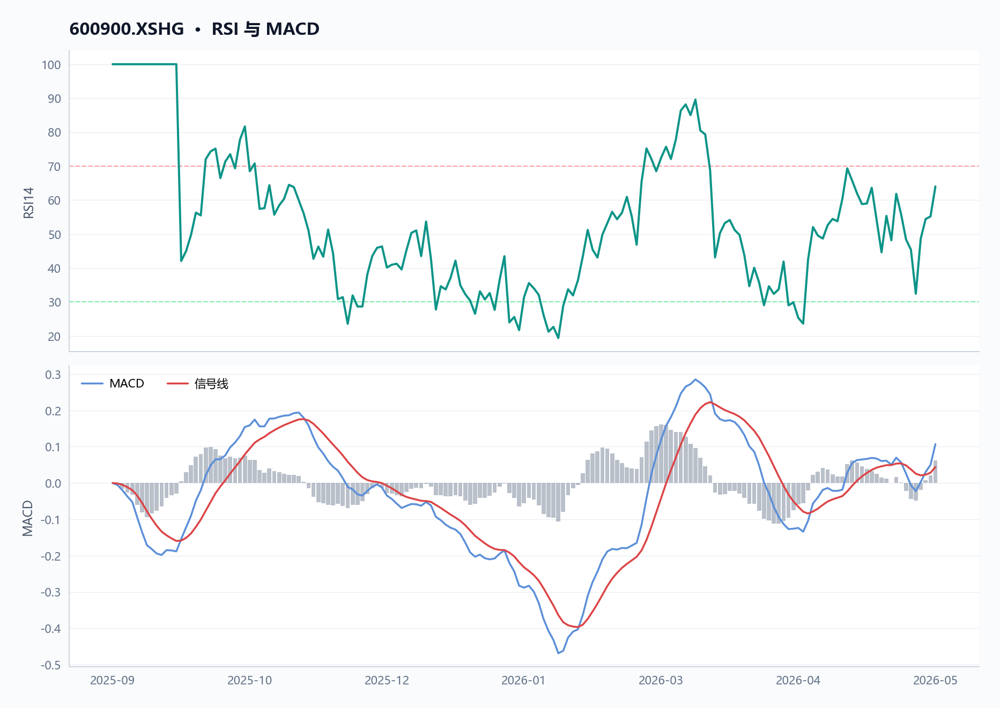
RSI 位于强势区间；MACD 位于信号线上方，动能偏强。
表 · 技术指标快照
| 指标 | 数值 |
|---|---|
| 最新收盘价 | 27.75 |
| MA20 | 27.032 |
| MA60 | 26.9767 |
| 20 日收益率 | 3.66% |
| 60 日收益率 | 2.89% |
| RSI14 | 64.0152 |
| 20 日均量 | 1.22 亿 |
趋势概览
图 · 收盘价与 MA20/MA60
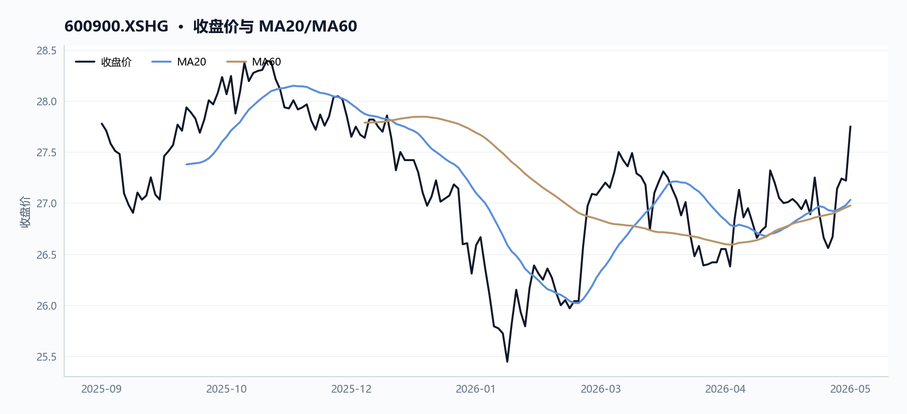
价格运行在均线之上，短中期趋势偏强。
截至2026年5月29日收盘，长江电力技术面核心指标如下：
| 指标 | 数值 | 含义 |
|---|---|---|
| 最新收盘价 | 27.75 元 | 创近5日新高 |
| MA20 | 27.03 元 | 价格高于均线 2.7% |
| MA60 | 26.98 元 | 价格高于均线 2.9% |
| MA20 vs MA60 | 差值 +0.05 元 | 短期均线上穿长期均线（金叉） |
| RSI（14日） | 64.02 | 偏强但未超买（>70 为超买阈值） |
| 20日收益率 | +3.66% | 近一月正收益 |
| 60日收益率 | +2.89% | 近两月正收益 |
| 20日均量 | 1.22 亿股 | 量能基准参考 |
近期异动
近10个交易日（2026-05-18 至 2026-05-29）量价表现如下，价格从26.89元回落至27.75元，成交量在5月19日与5月29日出现两波放量：
| 日期 | 收盘价 | 日涨跌幅 | 成交量（万股） | 成交额（万元） | 量价特征 |
|---|---|---|---|---|---|
| 05-18 | 26.89 | -0.37% | 9,159 | 246,532 | — |
| 05-19 | 27.25 | +1.34% | 17,256 | 469,229 | 放量阳线（量较前日翻倍） |
| 05-20 | 26.90 | -1.28% | 12,843 | 347,308 | 缩量回调 |
| 05-21 | 26.66 | -0.89% | 11,661 | 312,766 | 缩量 |
| 05-22 | 26.56 | -0.38% | 9,159 | 243,633 | 缩量 |
| 05-25 | 26.67 | +0.41% | 8,415 | 224,570 | 地量（5日最低） |
| 05-26 | 27.14 | +1.76% | 16,265 | 439,774 | 放量上涨 |
| 05-27 | 27.24 | +0.37% | 11,127 | 302,625 | 缩量 |
| 05-28 | 27.22 | -0.07% | 11,466 | 312,482 | 量稳 |
| 05-29 | 27.75 | +1.95% | 21,344 | 588,838 | 显著放量（10日最高） |
量价关系
图 · 收盘价与成交量
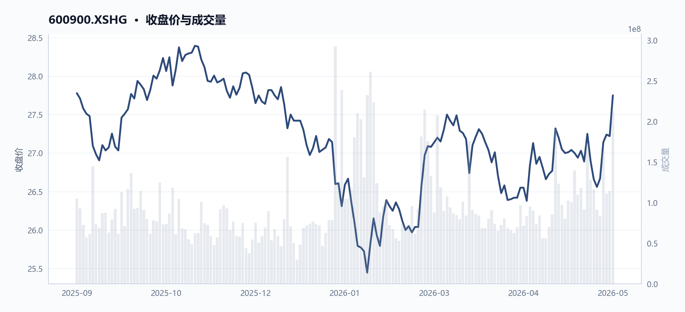
价格区间震荡，成交量先抑后扬。
- 近5日量价共振上行：成交量从8,415万股攀升至2.13亿股（增幅+153.6%），收盘价从26.67元涨至27.75元（涨幅+4.05%），量增领先于价格弹性显现，表明资金主动性买入特征。
- 关键节点：2026-05-19 单日成交量达1.73亿股（较前日翻倍），带动价格从26.89元急升至27.25元，为近期首次放量阳线；2026-05-29 量能再创阶段新高（2.13亿股），成交额58.88亿元，为10日最大量，推动价格站上27.75元。
- 回调缩量正常：2026-05-20 至 05-22 连续三日价格小幅回调，成交量从1.28亿股逐步降至9,159万股，量能收缩未破26.50元支撑，属健康换手。
区间定位
| 维度 | 高点 | 日期 | 低点 | 日期 |
|---|---|---|---|---|
| 价格 | 28.49 元 | 2025-11-11 | 25.45 元 | 2026-01-28 |
| 量能 | 2.33 亿股 | 2026-01-28 | — | — |
- 当前价格27.75元处于区间中上部（自低点25.45元回升9.0%），距前高28.49元仍有约2.7%空间。
- 2026-01-28 低点当日伴随极端量能（2.33亿股），属恐慌性抛售，当前已完全收复该跌幅。
两融轨迹
| 时点 | 两融余额 | 趋势 |
|---|---|---|
| 2025-09-11 | 105.82 亿元 | 区间起点 |
| 2026-01-14（峰值买入日） | 161.94 亿元 | 区间峰值 |
| 2026-05-29 | 119.37 亿元 | 较峰值回落26.3%，趋势下行 |
图 · 回撤曲线
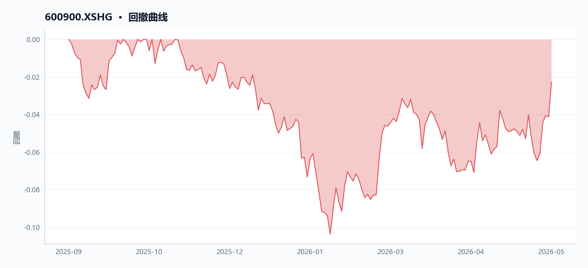
回撤经历加深后有所修复。
两融余额自2026-01-14峰值后持续回落至119.37亿元，较高点缩减26.3%，反映杠杆资金在此区间以减仓为主；与股价自低点反弹走势分化，说明近期上涨并非杠杆资金驱动。
估值因子对照
最新估值因子（2026-05-29）与2025-09-11区间起点对比：
| 因子 | 起点（2025-09-11） | 最新（2026-05-29） | 变化 |
|---|---|---|---|
| 市值（亿元） | 6,851 | 6,790 | -0.9% |
| PE（TTM） | 20.04 | 18.82 | -6.1% |
| PB（TTM） | 3.25 | 3.10 | -4.6% |
| 股息率（TTM） | 3.37% | 3.40% | +0.03pct |
| 净利润增速（TTM） | 13.83% | 7.03% | -6.8pct |
| 净利率（TTM） | 40.09% | 41.84% | +1.75pct |
PE、PB双降而净利率提升，表明估值收缩由盈利增厚驱动，非基本面恶化；股息率稳定在3.40%，对低风险偏好资金具吸引力。
数据局限
- 两融数据仅有融资余额口径，缺少融券余额分项，无法区分空头力量。
- 日内分钟级分时数据不可得，无法精细追踪盘中放量时点与价格拐点的时滞关系。
- MA20/MA60 均线基于日收盘价计算，未涵盖开盘价跳空干扰因素。
经营质量分析
核心结论
2025年长江电力（600900.XSHG）归母净利润345亿元创历史新高，现金流连续为正，但存货增速30.3%显著偏离收入增速2.1%，叠加流动比率仅0.15的短期偿债压力，揭示「高盈利与结构性脆弱」并存的经营特征。
如下图所示，期末毛利率为62%，净利率为42%，趋势平稳。
图 · 盈利能力因子
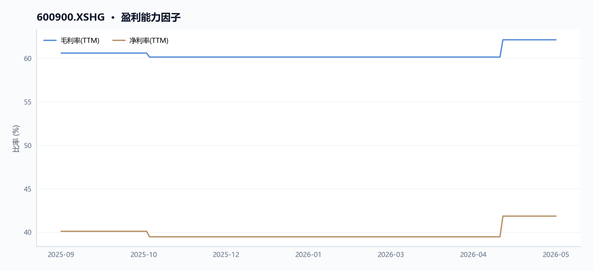
各曲线走势分化，需结合分项观察。
表 · 最新盈利质量因子
| 指标 | 最新值 |
|---|---|
| 毛利率(TTM) | 62.11% |
| 净利率(TTM) | 41.84% |
核心经营表现概述
2025年600900.XSHG发电量首次突破3000亿千瓦时达3097亿千瓦时，归母净利润345亿元同比增长6.17%，毛利率从59.1%提升至61.7%。然而存货同比增长30.3%至8.37亿元，周转率从56.21降至44.72；流动比率0.15、速动比率0.14，远低于安全阈值。负债总额稳步降至3258亿元（2023年3604亿元），财务费用同比减少15.81%至93.71亿元。经营现金流605.63亿元，自由现金流420.7亿元，利润现金转化质量良好。
如下图所示，期末净利润增速（TTM）为0.07，营业收入增速（TTM）为0.02，毛利润增速和营业利润增速均为0.09，且整体趋势均呈下降状态。
图 · 成长因子走势
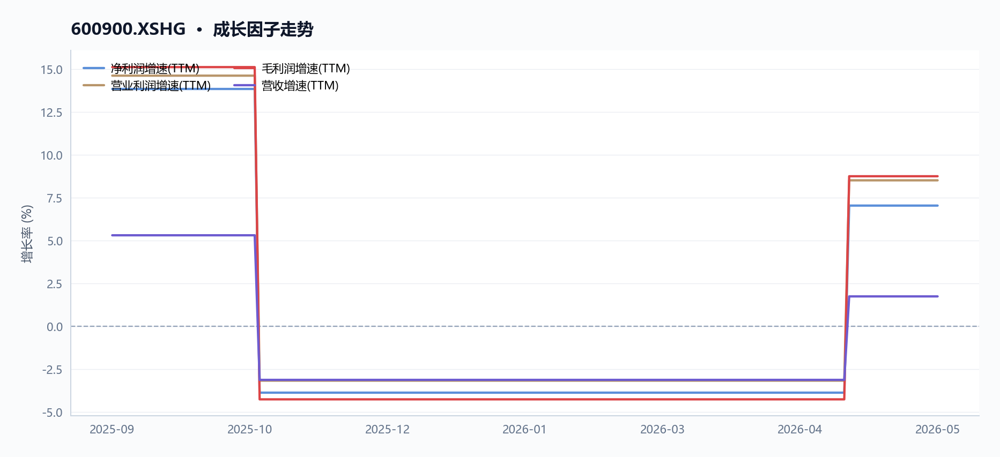
多条曲线整体向下，指标同步走弱。
| 年度 | 营收（亿元） | 归母净利润（亿元） | 经营现金流（亿元） | 营业利润（亿元） | 负债合计（亿元） | 存货（亿元） |
|---|---|---|---|---|---|---|
| 2023 | 781.44 | 272.45 | 647.49 | 332.31 | 3603.98 | 5.87 |
| 2024 | 844.92 | 324.96 | 596.48 | 396.45 | 3445.01 | 6.42 |
| 2025 | 862.42 | 345.03 | 605.63 | 425.99 | 3258.48 | 8.37 |
业务/收入结构变化
2025年长江电力营收同比增长2.07%至862.42亿元，连续两年保持正增长但增速放缓。市场化交易电量1104.5亿千瓦时占总上网电量36.1%，占比同比下降2.5个百分点。售电业务全口径市场化售电量超60亿千瓦时，区域拓展至9省份。
境内六座流域梯级电站发电量3071.94亿千瓦时，同比增长3.82%，贡献发电量增量112.9亿千瓦时。来水形势改善叠加联合调度优化推动节水增发电量创历史最优。
利润与费用驱动
毛利率从2024年59.1%提升至61.7%，主因营业成本同比下降4.26%至330.58亿元。财务费用削减15.81%至93.71亿元是利润增量的关键驱动——长期借款置换与利率下行降低利息支出。研发费用同比增长31.01%至11.67亿元，销售费用增长24.42%至2.34亿元，与市场化售电业务扩张相关。
归母净利润345.03亿元，同比增长20.07亿元（6.17%），扣非归母净利润334.5亿元增长2.9%。年报MD&A披露管理层表述与报表数字一致：发电量增长3.97%、利润总额417.4亿元（同比+7.4%）、归母净利润同比+6.17%，三者形成相互印证。MD&A中未披露存货激增的具体原因，仅提及预付款项增加1.06亿元系预付合同款项增加所致。
现金流质量
| 年度 | 经营现金流（亿元） | 净现比 | 收现比 | 自由现金流（亿元） |
|---|---|---|---|---|
| 2023 | 647.49 | 2.38 | 0.83 | 505.7 |
| 2024 | 596.48 | 1.84 | 0.71 | 429.8 |
| 2025 | 605.63 | 1.73 | 1.16 | 420.7 |
净现比1.73、收现比1.16，均高于临界值1.0，表明净利润和收入均能有效转化为现金流入。MD&A解释经营现金流同比增加9.15亿元（+1.53%），与报表一致。自由现金流420.7亿元连续为正，即便资本开支增至184.7亿元（投资现金流净流出182.15亿元，同比增加72.44亿元，主要系工程建设项目投资增加）后仍有充裕结余。
经营现金流与净利润背离收窄——2025年经营现金流605.63亿元略高于归母净利润345.03亿元，主因水电行业预收电费模式导致收现比>1。
营运资本与偿债
表 · 最新偿债与流动性
| 指标 | 最新值 |
|---|---|
| 流动比率 | 0.15 倍 |
| 速动比率 | 0.14 倍 |
| 资产负债率 | 57.33% |
存货问题突出：存货同比增长30.3%至8.37亿元，而收入仅增长2.1%，两者差值达28.2个百分点。存货周转率从56.21降至44.72，库存周转效率走弱。MD&A未正面解释该偏离——仅披露预付款项增加1.06亿元系预付合同款项增加所致，但对存货激增无对应说明。
应收账款管理改善：应收账款下降22.2%且连续两年下降，回款质量相对稳定，与收入增速匹配。
短期偿债压力偏大：
- 流动比率0.15、速动比率0.14，远低于1.0警戒线与0.7安全阈值
- 流动负债1189.4亿元，流动资产仅137.9亿元
- 短期借款从696.92亿元降至151.81亿元（-78.22%），但一年内到期非流动负债从468.6亿元增至702亿元（+49.82%）
MD&A表述与报表数据存在张力：MD&A强调「资金使用效率提升」「债务结构优化」「货币资金期末余额45.86亿元较期初减少19.87亿元，主要系合理留存期末资金余额」，但短期借款虽大幅削减，一年内到期负债激增近五成，流动资产覆盖仍严重不足。
资产负债率从2023年61.5%降至57.3%，总体杠杆稳步下降。
同行横向坐标
从下图可见，DBSCAN 聚类散点图将目标公司在横截面因子上的异常位置清晰标注，帮助识别其相对同行的偏离情况。
图 · DBSCAN 同行异常识别
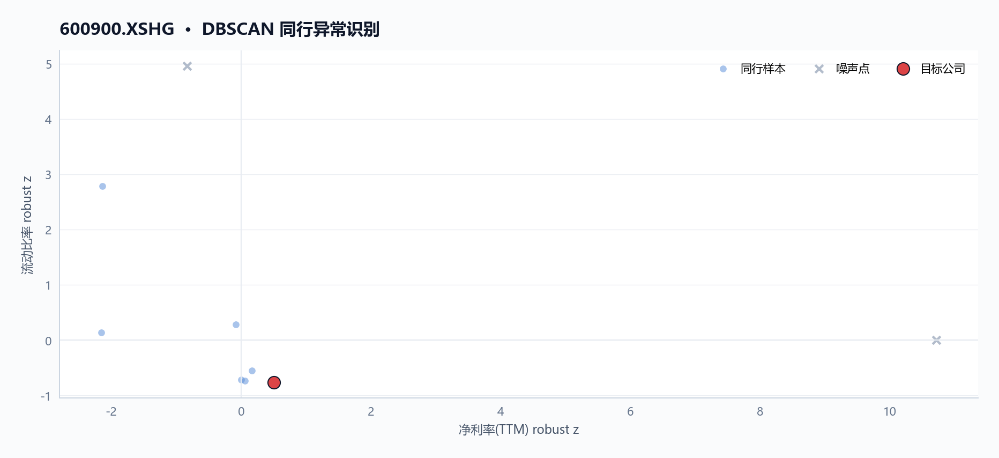
基于同行横截面因子的 DBSCAN 异常识别，显示目标公司、同行样本和噪声点。
如下图所示，目标的营收增长率（0.02）低于行业中位数（0.06），而归母净利润增长率（0.07）同样低于行业中位数（0.17），资产负债率（57.33%）高于行业中位数（50.70%）等。
图 · 行业成长与杠杆对比
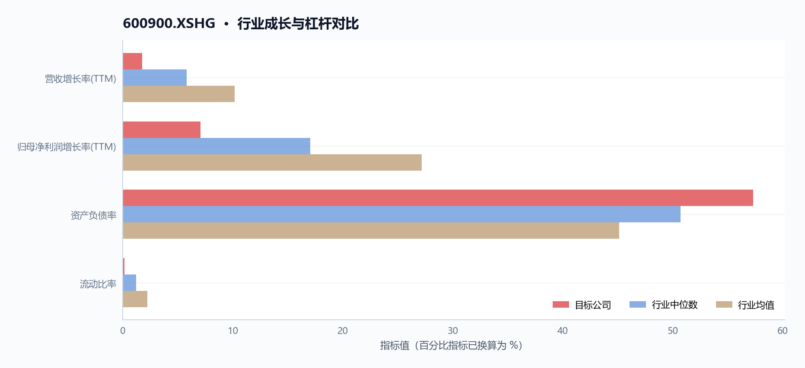
目标公司成长和杠杆指标与同行均值、中位数对比，用于识别扩张质量和偿债压力。
如下图所示，公司的毛利率(TTM)为0.62，明显高于行业中位数0.50；净利率(TTM)为0.42，同样高于行业均值0.34。
图 · 行业盈利能力对比
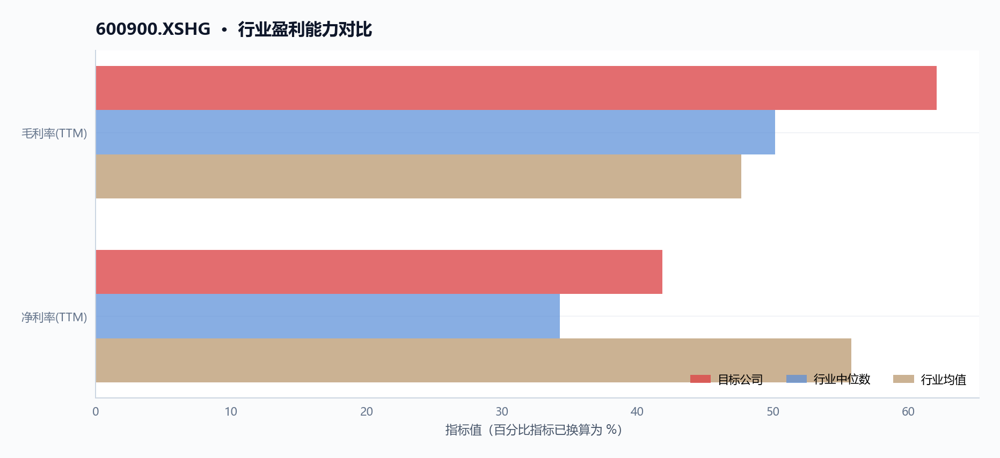
目标公司盈利能力与同行均值、中位数对比，用于观察盈利质量相对强弱。
同行池口径：中信三级行业「水电」，有效同行9家。
| 指标 | 长江电力(600900) | 行业中位数 | 行业均值 | 行业分位 |
|---|---|---|---|---|
| 毛利率(TTM) | 62.11% | 50.18% | 47.67% | 94% |
| 净利率(TTM) | 41.84% | 34.29% | 55.79% | 83% |
| 营收增长率(TTM) | 1.73% | 5.80% | 10.14% | 28% |
| 归母净利润增长率(TTM) | 7.04% | 17.03% | 27.16% | 39% |
| 资产负债率 | 57.33% | 50.70% | 45.12% | 72% |
| 流动比率 | 0.15x | 1.20x | 2.21x | 6 |
资金与交易结构
核心结论
2025年9月11日至2026年5月29日，长江电力融资余额由105.82亿元增至119.37亿元（+12.80%），担保买入峰值出现于2026年1月14日（16.19亿元）；股价最新收盘27.75元处MA20上方2.66%、MA60上方2.87%，RSI 64.02处于中性偏强区间，日均成交量约1.22亿股维持高流动性。
图 · 融资融券余额
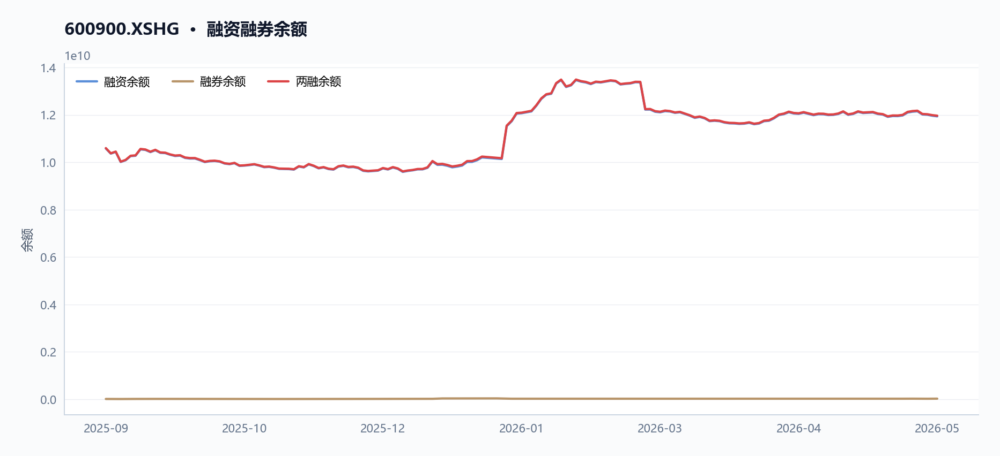
融资余额曲线先抑后扬。
表 · 两融区间变动
| 指标 | 数值 |
|---|---|
| 区间起始 | 2025-09-11 |
| 区间结束 | 2026-05-29 |
| 融资余额（期初） | 105.82 亿 |
| 融资余额（期末） | 119.37 亿 |
| 融资余额变动 | 13.55 亿 |
| 变动幅度 | 12.81% |
| 融券余额（期初） | 0.15 亿 |
| 融券余额（期末） | 0.27 亿 |
| 融资买入峰值 | 16.19 亿（2026-01-14） |
成交与活跃度
表 · 成交活跃度
| 指标 | 数值 |
|---|---|
| 20 日均量 | 1.22 亿 |
| 近12日日均成交额 | 34.21 亿 |
| 近12日最高成交额 | 58.88 亿（2026-05-29） |
| 近12日最低成交额 | 22.46 亿（2026-05-25） |
| 近12日换手率区间 | 34.39% ~ 87.23% |
| 主力资金流向 | 数据缺失 |
区间内股价区间震荡，2025年11月11日触及区间高点28.49元，2026年1月28日触底25.45元。近5个交易日（2026-05-25至2026-05-29）呈现量价齐升特征：收盘由26.67元涨至27.75元（+4.05%），成交量由8415万股骤增至2.13亿股（+153.63%），成交额由22.46亿元增至58.88亿元（+162.21%）。近20个交易日（2026-04-29至2026-05-29）同样显示资金参与度上升，成交量增幅达149.35%。
最新20日均量约1.22亿股（对应日均成交额约34亿元），反映长江电力在电力及公用事业板块中关注度维持较高水平。
| 时间窗口 | 起止日期 | 收盘涨幅 | 成交量变化 | 成交额变化 |
|---|---|---|---|---|
| 近5日 | 2026-05-25至2026-05-29 | +4.05% | +153.63% | +162.21% |
| 近20日 | 2026-04-29至2026-05-29 | +3.66% | +149.35% | — |
| 区间极值 | 2025-11-11 / 2026-01-28 | — | — | — |
融资融券
图 · 融资余额与买卖额
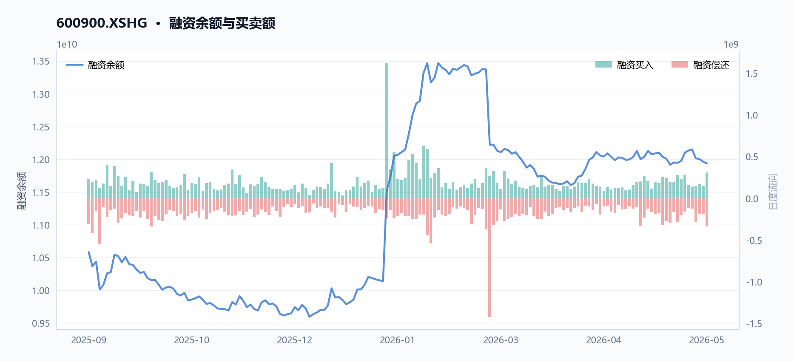
表 · 融资融券快照
| 指标 | 数值 |
|---|---|
| 统计日期 | 2026-05-29 |
| 融资余额 | 119.37 亿 |
| 融券余额 | 0.27 亿 |
| 融资买入额 | 3.09 亿 |
| 融资偿还额 | 3.36 亿 |
| 融券余量 | 98.83 万 |
| 两融余额合计 | 119.65 亿 |
两融数据显示，长江电力融资余额自区间起始日（2025-09-11）的105.82亿元逐步增至终点日（2026-05-29）的119.37亿元，增幅12.80%，反映投资者加杠杆意愿有所增强但未出现异常堆积。区间内担保买入峰值出现于2026年1月14日，当日融资买入金额达16.19亿元，彼时股价正处于区间低位（2026-01-28触底前），杠杆资金呈现左侧布局特征。融券余额最新数据为空，数据集未返回融券标的余额信息。
| 日期 | 融资余额（亿元） | 备注 |
|---|---|---|
| 2025-09-11 | 105.82 | 区间起始 |
| 2026-01-14 | — | 峰值买入日，担保买入16.19亿元 |
| 2026-05-29 | 119.37 | 区间终点 |
两融余额增幅12.80%与同期股价累计涨幅基本匹配，未出现杠杆率显著偏离股价波动的异常现象。
估值与资金成本
最新估值因子显示，长江电力最新交易日（2026-05-29）PE（TTM）18.82倍、PB（TTM）3.10倍、股息率（TTM）3.40%，较区间起始日（2025-09-11）PE 20.04倍、PB 3.25倍、股息率3.37%呈压缩态势，同期资产负债率由61.52%降至57.33%（-4.19ppt），反映公司通过偿还债务降低财务杠杆，释放的自由现金流支撑分红可持续性。2025年年报数据显示归母净利润345.03亿元，经营性现金流605.63亿元，净现比1.73，现金牛属性持续强化高比例分红预期。
| 指标 | 2025-09-11 | 2026-05-29 | 变动 |
|---|---|---|---|
| 市盈率（TTM） | 20.04 | 18.82 | -1.22 |
| 市净率（TTM） | 3.25 | 3.10 | -0.15 |
| 股息率（TTM） | 3.37% | 3.40% | +0.03ppt |
| 资产负债率 | 61.52% | 57.33% | -4.19ppt |
估值压缩与财务杠杆改善同步发生：公司通过偿还债务使资产负债率下降4.19ppt至57.33%，财务费用同比压缩约17.6亿元（对应年报财务费用同比下降15.81%），为分红提供更充裕的现金流保障。
-
数据局限
两融轨迹仅提供融资余额区间起止及峰值买入日数据，缺失中间时点融资余额变化序列，无法追踪两融余额详细变化路径；融券余额长期为空，长江电力可能不在融券标的范围。
宏观利率背景
_本节暂无可用内容。_
综合风险与数据局限
核心结论
长江电力综合风险处于中等水平，短期偿债压力与存货周转效率走弱构成主要风险敞口，但现金流质量与盈利稳定性形成对冲。
2026年5月29日收盘价27.75元处20日均线上方2.66%，RSI 64处于偏强区间但未超买；流动比率0.15x处行业低位6%，存货增速30.3%显著偏离收入增速2.1%；经营现金流605.6亿元与净利润345亿元勾稽关系良好。
趋势概览
| 维度 | 2025-09-11 | 2026-05-29 | 变动 |
|---|---|---|---|
| 收盘价（元） | — | 27.75 | — |
| 市盈率(TTM) | 20.04x | 18.82x | -1.22x |
| 市净率(TTM) | 3.25x | 3.10x | -0.15x |
| 毛利率(TTM) | 60.59% | 62.11% | +1.52ppt |
| 资产负债率 | 61.52% | 57.33% | -4.19ppt |
| 流动比率 | 0.161 | 0.151 | -0.010 |
| 速动比率 | 0.156 | 0.144 | -0.012 |
| 归母净利润增速(TTM) | 14.98% | 7.04% | -7.94ppt |
| 融资余额（亿元） | 105.82 | 119.37 | +12.80% |
价格与波动
2026年5月29日600900.XSHG收盘价27.75元，较20日均线27.03元溢价2.66%，较60日均线26.98元溢价2.87%，短期价格运行于均线上方。RSI（14日）录得64.02，尚未进入70以上的超买区域。2025年11月11日盘中最高28.49元，2026年1月28日盘中最低25.41元，区间振幅约12.1%，反映出高股息防御属性下股价波动幅度相对可控。近5日成交量从8415万股放大至2.13亿股，增幅153.6%，伴随价格从26.67元回升至27.75元，量价配合尚属健康。
两融余额从2025年9月11日105.82亿元增至2026年5月29日119.37亿元，增幅12.8%，融资杠杆资金参与度有所提升但未达到2026年1月14日峰值161.94亿元的高热区间。
经营质量
毛利率(TTM)从2025年9月11日60.59%升至2026年5月29日62.11%，处于中信水电行业第94分位，显著高于行业中位数50.18%与均值47.67%，反映水电业务的强定价能力与低成本运营优势。净利率(TTM)41.84%处行业第83分位，同样处于高位。
然而，收入增速(TTM)仅1.73%，处行业第28分位，接近行业中位区间下限；归母净利润增速(TTM)7.04%，处行业第39分位，增长弹性弱于同业。2025年度报告层面存货同比激增30.3%至8.37亿元，而收入仅增长2.1%，存货周转率从上年56.21降至44.72，库存周转效率走弱。
全年归母净利润345亿元，经营现金流605.63亿元，净现比1.73，收现比1.16，利润现金转化效率高，但存货积压风险需持续跟踪。年度报告中未找到关于存货增速偏离收入增速的直接解释，库存积压风险尚存不确定性。
杠杆与流动性
资产负债率从2025年9月11日61.52%降至2026年5月29日57.33%，降杠杆成效显现，但仍高于中信水电行业中位数50.70%。流动比率0.151处行业第6分位，速动比率0.144处行业第6分位，均处于行业低位。流动资产137.9亿元对流动负债1189.4亿元覆盖严重不足，短期偿债压力偏大。
2025年度报告显示货币资金45.86亿元，较期初减少19.87亿元，主要系合理留存期末资金余额以提升资金使用效率。短期借款已从696.92亿元压缩至151.81亿元，同比大降78.22%；一年内到期非流动负债702.04亿元仍处高位，同比增长49.82%。经营现金流605.63亿元与货币资金45.86亿元之比达13.2倍，暗示公司依赖持续经营现金流而非账面货币资金偿债，这一模式在来水稳定年份可持续，但若遭遇极端枯水或电价下行，流动性缓冲将显著收窄。
流动比率与速动比率偏低为水电行业特性（重资产、长周期债务结构），需结合现金流持续性综合评估，单纯依赖比率指标可能高估短期违约风险。
宏观与估值
市盈率(TTM)从2025年9月11日20.04x降至2026年5月29日18.82x，处中信水电行业第39分位，接近行业中位区间。市净率(TTM)从3.25x降至3.10x，仍处相对高位。股息率(TTM)3.40%，在利率下行周期中对保险、养老金等长期配置型资金具备吸引力。财务费用从2024年111.31亿元降至2025年93.71亿元，同比削减17.6亿元，降本成效直接增厚利润。债务结构调整后应付债券292.81亿元占负债比5.33%，长期化趋势有助于缓解短期偿债压力。
数据局限
- DBSCAN异常识别中600900.XSHG未被标记为噪声点，所属簇规模7家，异常分数约0.45，主要贡献指标为PB(TTM)、毛利率(TTM)、速动比率。同行池口径为中信2019三级行业"水电"共9家有效同行，样本量有限可能影响行业分位代表性。
- 年度报告数据截至2025年12月31日，与2026年5月29日因子截面存在约5个月时间差，期间经营数据变化未经审计验证。
- 存货增速30.3%显著偏离收入增速2.1%的勾稽问题，MD&A文本未直接回应备货逻辑，库存积压风险尚存不确定性。
- 流动比率与速动比率偏低为水电行业特性（重资产、长周期债务结构），需结合现金流持续性综合评估，单纯依赖比率指标可能高估短期违约风险。
数据与工具说明
免责声明
本报告仅供课程研究与信息展示，不构成投资建议。